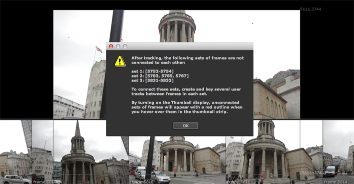

Auto-tracking stills is not perfect and may throw out some disconnected frames, most likely due to a large change in viewpoint. After tracking, set the Thumbnails control above the Viewer to All and hover over images in the thumbnail strip. Thumbnails highlighted in red were not matched with the reference frames around them and are flagged with an error message in the Viewer.

CameraTracker can deal with disconnected frames in two ways:
• work with the connected set by deleting the unconnected reference frames using the button or Delete dropdown and tracking again, or
• if all the frames in the sequence are needed, create User Tracks that span the sets to connect them. Make sure to define the tracks in as many frames as possible, and then track again based on the User Tracks. See Linking Still Reference Frames.
TIP: When a camera track starts and ends in the same place, CameraTracker may not automatically connect the end frame with the starting frame. You can set the Thumbnail control to Tracked to review the connections created between stills, and then add User Tracks between the two frames and click Update Track. See Working with User Tracks for more information.
|
|